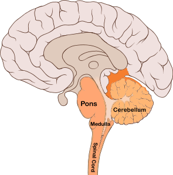
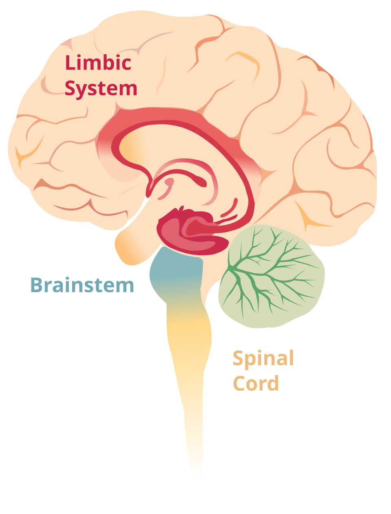
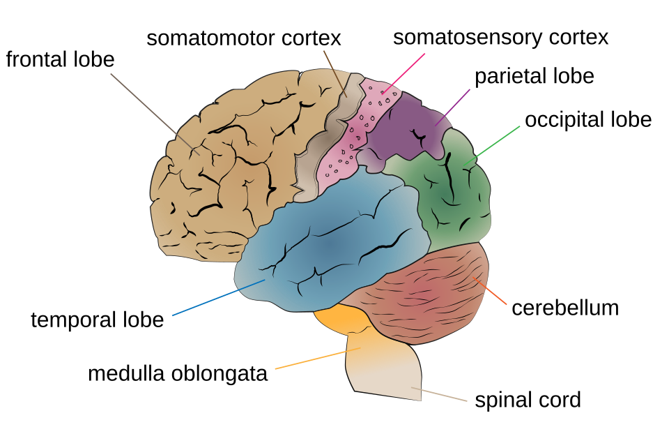

The human brain is arguably the most complex structure in the known universe. Weighing in at only about three pounds, it contains roughly 86 billion neurons, forming trillions of connections that dictate everything from your baseline heart rate to your most abstract philosophical thoughts. For the AP Psychology exam, you do not need to be a neurosurgeon, but you do need to act like a cartographer. You must be able to accurately map specific behaviors, deficits, and functions to their precise anatomical locations.
To make this manageable, we organize the brain into an evolutionary timeline from bottom to top. As you move up from the spinal cord to the outermost wrinkles of the cortex, the structures become increasingly complex. We divide this hierarchy into three primary regions:
The Old Brain (Brainstem & Cerebellum): Handles basic, unconscious survival functions.
The Emotional Center (Limbic System): Handles memory, intense emotions, and drives.
The New Brain (Cerebral Cortex): Handles complex thought, language, and voluntary movement.
1. The Old Brain (The Brainstem and Cerebellum)
Located at the very base of the skull where the spinal cord swells as it enters the brain, the brainstem is the oldest and most fundamental part of the central nervous system. It is responsible for automatic survival functions. If this area is severely damaged, life support is almost always required.
Medulla: Located at the absolute base of the brainstem, this structure controls life-sustaining autonomic functions such as heartbeat, breathing, and blood pressure. (Mnemonic: You would die without your medulla).
Pons: Sitting just above the medulla, the pons helps coordinate automatic movements and plays a critical role in regulating sleep and arousal by connecting the brainstem to the cerebellum. (Mnemonic:Pons = Pillows for sleep).
Cerebellum: The "little brain" attached to the rear of the brainstem. It is essential for coordinating voluntary movement, maintaining balance and posture, and processing implicit (muscle) memories. If you are effortlessly riding a bike, your cerebellum is doing the heavy lifting.
Reticular Formation: A nerve network that travels through the brainstem and thalamus, playing an essential role in controlling arousal and alertness. If you sever a cat's reticular formation, it lapses into a permanent coma.

The brainstem and cerebellum, showing the fundamental structures of the 'old brain.' (Source: Wikimedia Commons)
2. The Emotional Center (The Limbic System)
Sitting like a donut between the older brainstem and the newer cerebral hemispheres is the Limbic System. This neural system is heavily associated with intense emotions (like fear and aggression) and foundational drives (like hunger and sex).
Amygdala: Two lima-bean-sized neural clusters that are heavily linked to raw emotions, particularly fear and aggression. (Mnemonic: Don't make Amy mad, or she'll use her Amygdala!).
Hippocampus: A seahorse-shaped structure critical for the processing and storage of explicit, conscious memories. If this is damaged, a person cannot form new factual memories, a condition known as anterograde amnesia. (Mnemonic: If a hippo camped on your campus, you would certainly remember it).
Hypothalamus: Situated just below the thalamus, it directs maintenance activities (eating, drinking, body temperature), helps govern the endocrine system via the pituitary gland, and is linked to emotion and the brain's reward centers. It regulates the four F's: Fighting, Fleeing, Feeding, and... Fornicating.
Thalamus: The brain’s central sensory control center, located on top of the brainstem. It receives information from all the senses (except smell) and actively routes that data to the higher brain regions that deal with seeing, hearing, tasting, and touching. (Mnemonic: Hal and Amos act as traffic cops directing sensory information).

The components of the limbic system, responsible for memory, emotions, and basic drives. (Source: Wikimedia Commons)
3. The New Brain (The Cerebral Cortex)
The Cerebral Cortex is the intricate fabric of interconnected neural cells covering the cerebral hemispheres. This wrinkled outer layer is the body's ultimate control and information-processing center. It is divided into two hemispheres (left and right), which are connected by a thick band of neural fibers called the Corpus Callosum. Each hemisphere is subdivided into four specialized lobes:
The Four Lobes
Frontal Lobes: Located directly behind your forehead. These lobes are involved in speaking, muscle movements, and making plans and judgments (executive functions). They contain the Motor Cortex, which controls voluntary movements. The frontal lobes are the last part of the brain to fully develop, finishing in your mid-20s.
Parietal Lobes: Located at the top of the head toward the rear. They receive sensory input for touch, pressure, temperature, and body position. They contain the Somatosensory Cortex, which registers and processes body touch and movement sensations.
Occipital Lobes: Located at the back of the head. These lobes include areas that receive and process visual information from your eyes. (Mnemonic: You have eyes in the back of your head).
Temporal Lobes: Located roughly above the ears. They include the auditory areas, each receiving information primarily from the opposite ear. They also play a role in recognizing faces. (Mnemonic: They are right next to your temples).
Language Processing Areas
While most functions are distributed across both hemispheres, language is typically lateralized to the Left Hemisphere. Two specific regions are heavily tested:
Broca's Area: Located in the left frontal lobe, it directs the muscle movements involved in speech production. (Damage here causes Broca's (expressive) aphasia: you know what you want to say, but physically cannot produce the words).
Wernicke's Area: Located in the left temporal lobe, it is involved in language comprehension and expression. (Damage here causes Wernicke's (receptive) aphasia: you can speak fluently, but the words make absolutely no logical sense, acting like a "word salad").

The four distinct lobes of the cerebral cortex. (Source: Wikimedia Commons)
Crash Course Psychology: The Brain. (Source: YouTube)
4. The Adaptable Brain (Neuroplasticity)
Your brain is not a rigidly hardwired machine; it is a highly dynamic and malleable organ. Neuroplasticity refers to the brain's ability to change, reorganize, and build new neural pathways throughout life, especially in response to learning, experience, or following injury.
If a person goes blind, the occipital lobe doesn't just sit idle. Because of neuroplasticity, those visual processing areas may be recruited to enhance the person's sense of touch (for reading Braille) or hearing. While plasticity is present throughout a lifetime, the brain is vastly more plastic during childhood. This is why children can recover from severe traumatic brain injuries or massive surgeries (like a hemispherectomy, where an entire half of the brain is removed to stop seizures) far better than adults.
5. Don't Trip Up! (Common Misconceptions)
⚠️ Motor vs. Sensory Cortex: Students often mix these two up. Remember the order from front to back: The Motor Cortex is in the Frontal lobe (it sends signals out to move), while the Somatosensory Cortex is right behind it in the Parietal lobe (it receives sensory signals in).
⚠️ Broca's vs. Wernicke's:Broca’s area is for Broadcasting (speaking). Wernicke’s area is for What? (comprehending).
⚠️ The 10% Myth: You do NOT only use 10% of your brain. Every part of the brain has a known function, and brain scans show activity cascading across the entire brain even during simple tasks or sleep. You use 100% of your brain.
6. Level Up Your Score: Interactive Review
The brain anatomy section is one of the most vocabulary-dense components of the entire AP Psychology curriculum. Do not just read this list—test yourself actively:
Flashcard Drill: Head to our Flashcards page, select Unit 1, and focus entirely on the structures of the brain until you can locate their function in under 3 seconds.
Cortex Commander: Our battleship game Cortex Commander was built specifically for this unit! See if you can correctly identify brain structures to sink your opponent's fleet.
Oddball: Can you spot the lobe that doesn't belong? Try out Oddball to test your ability to group anatomical structures by their evolutionary region.
Topic 1.4 Quiz: Verify your anatomical mastery with our adaptive quiz before moving on to consciousness and sleep.